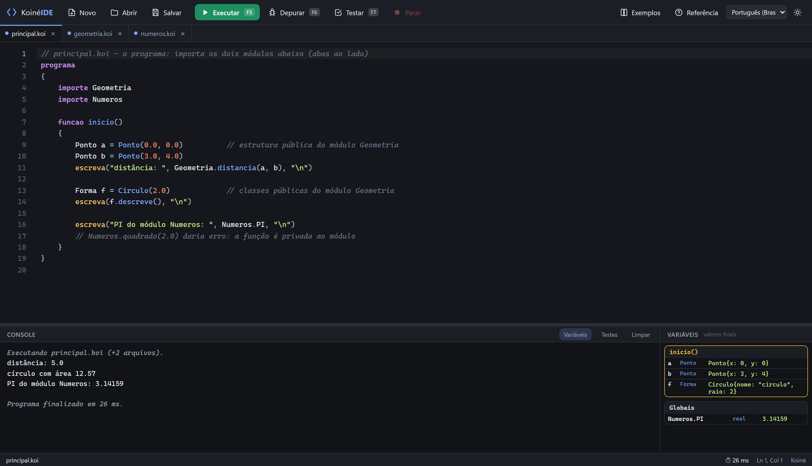
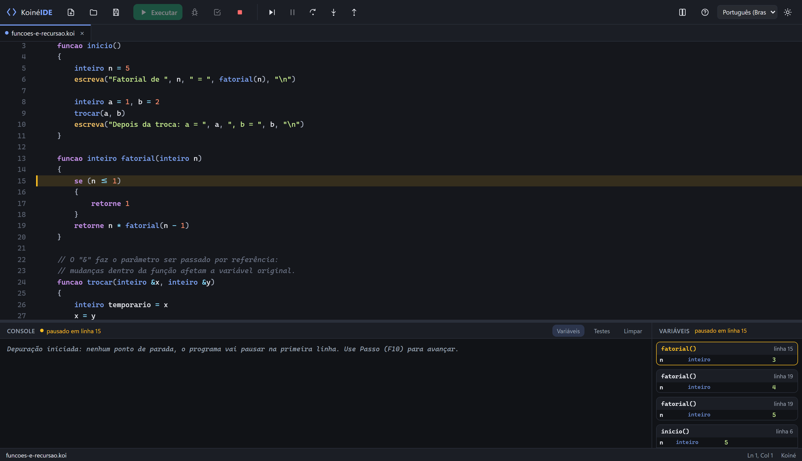
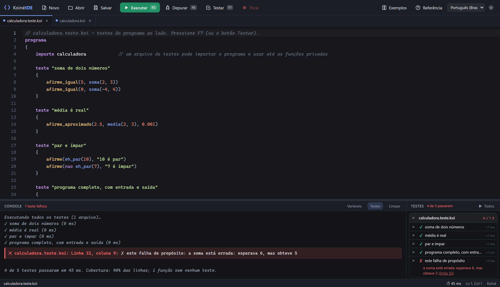
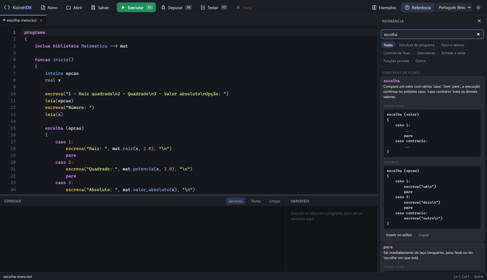
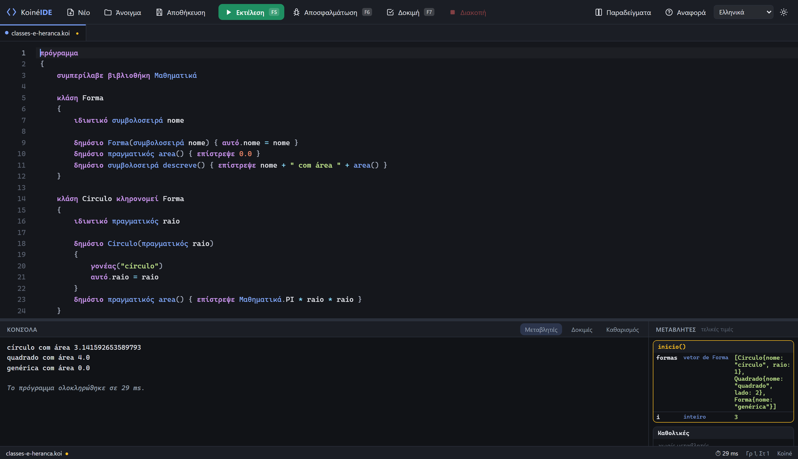

Aprenda a programar no seu idioma.
Koiné IDE é um ambiente gratuito e leve para os primeiros passos em programação. A linguagem Koiné é um pseudocódigo com tipos, funções, estruturas e classes, cujas palavras reservadas existem em dez idiomas.
Instalador de poucos MB, sem precisar de administrador. Também há um pacote MSI e todas as versões. Windows 10/11, 64 bits.

Em um minuto
Escrever um programa, executar com entrada de dados, entender um erro, depurar passo a passo, rodar testes com cobertura e trocar o idioma. Sem áudio, com legendas.
🌍 Dez idiomas
Português, inglês, espanhol, grego, russo, ucraniano, polonês, japonês, coreano e chinês. Interface, palavras reservadas, referência e exemplos. Troque quando quiser: a IDE converte o código.
▶ Executa na hora
F5 e pronto. Console integrado com entrada de dados, saída em tempo real e botão Parar. Laços infinitos nunca travam a janela.
🧠 Erros que ensinam
Mensagens em português, com linha e coluna, que explicam o problema e sugerem a correção. Tipos verificados antes de executar.
🐞 Depurador visual
Pontos de parada, passo a passo, pilha de chamadas e valor de cada variável ao vivo. Passe o mouse sobre uma variável para ver o valor.
✅ Testes e cobertura
Escreva testes na própria linguagem (teste "nome" { afirme_igual(...) }), rode com F7 e veja o que passou e quais linhas nenhum teste alcançou.
📁 Projetos de verdade
Abra uma pasta, divida o programa em módulos com importe, use estruturas, classes com herança e referências seguras.
O mesmo programa, três idiomas
O vocabulário é traduzido, a semântica é uma só. Quem aprende em grego ou japonês escreve com as palavras da própria língua e pode converter o programa para mostrar a um colega que fala outra.
programa
{
funcao inicio()
{
inteiro n = 5
se (n > 3 e verdadeiro)
{
escreva("olá", "\n")
}
}
}πρόγραμμα
{
συνάρτηση αρχή()
{
ακέραιος n = 5
αν (n > 3 και αληθής)
{
γράψε("olá", "\n")
}
}
}program
{
function main()
{
integer n = 5
if (n > 3 and true)
{
write("olá", "\n")
}
}
}Por dentro




Para quem é
Professores
Uma ferramenta só para a turma inteira, com exemplos prontos, mensagens de erro didáticas e testes automatizados para corrigir exercícios. O instalador não precisa de administrador, então funciona em laboratórios com restrições.
Estudantes
Comece pelo olá-mundo, avance para funções, vetores e matrizes, e chegue a módulos, estruturas e classes sem trocar de ferramenta. O depurador mostra o que o computador está fazendo a cada linha.
Quem não programa em português
As palavras reservadas são as do seu idioma, não um inglês decorado. Ao final, converter o programa para inglês é um clique, e o aprendizado se transfere para qualquer linguagem.
Quem quer contribuir
Código aberto (MIT), TypeScript e Rust, testes em cada PR. Traduções, exemplos, funções novas e correções são bem-vindos: veja o guia de contribuição.
Comece agora
- Baixe o instalador e execute. O Windows pode avisar que o editor é desconhecido (o instalador ainda não é assinado): clique em Mais informações → Executar assim mesmo.
- Abra a IDE, clique em Exemplos e escolha Olá, mundo. Pressione F5.
- Siga o guia da IDE e o tour pela linguagem. Quando travar numa palavra, pressione F1.